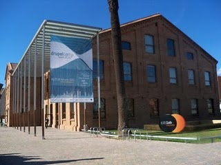
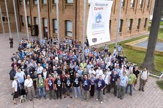
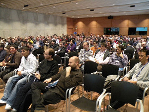

Bienvenid@s al DRUPAL Day Barcelona - 2011

¿Qué?
El 1er. Drupal Day Barcelona 2011 será un encuentro orientado a los profesionales de la comunidad DRUPAL y en el que podremos debatir, practicar, consultar, colaborar y aprender sobre nuestro CMS predilecto Drupal.
Entre otras cosas, podrás asistir a:
- Sesiones de presentación de novedades o aspectos técnicos avanzados.
- Sprints de desarrollo de ejemplos para la documentación, corrección de errores del módulo views, desarrollo de la plantilla (theme) para Drupal.cat, etc.
- Actividades complementarias que te permitairán realizar NetWorking, ampliar tu red de contactos y consolidar tu relación con la comunidad Drupal.
¿Dónde?
La sede de celebración del 1er. Drupal Day Barcelona 2011 será el conocido Citilab de Conellà de Llobregat. Este entorno de difusión de la tecnología, en el que ya hemos celebrado la DrupalCon 2007 y la DrupalCamp 2010, nos proporciona el marco ideal para este nuevo evento de la comunidad DRUPAL.
¿Cuando?
El 1er. Drupal Day Barcelona 2011 se celebrará el sábado 18 de junio, entre las 10:00 y les 18:00 horas.

¿Cuanto?
La inscripción al 1er. Drupal Day Barcelona 2011 es gratuita !!!, pero, por razones de aforo y organización, está limitada a las primeras 150 inscripciones
NOTA: Por favor, no te inscribas si no estas seguro de poder asistir (piensa en los demás y no bloquees una plaza que puede ser utilizada por otra persona - Gracias).
¿Quien?
El 1er. Drupal Day Barcelona 2011 está organizado por la asociación Drupal.cat, con la colaboración de algun@s personas (ponentes, líderes de los sprints, etc) y con el inestimable soporte de nuestros patrocinadores, a quien desde aquí agradecemos su colaboración.
¿Qué es DRUPAL?
Si te interesa la respuesta a esta pregunta, quizá este no sea el evento adecuado para ti. Recuerda que el 1er. Drupal Day Barcelona 2011 está orientado a profesionales de la comunidad DRUPAL.
Hay otros eventos de la comunidad Drupal que te podrían ser de mucha mas utilidad:
- Los foros y las sesiones de divulgación de la asociación Drupal.cat en el mismo Citilab.
- Los foros de Drupal Hispano.
- o la maravillosa página (en inglés) About Drupal.

.png)